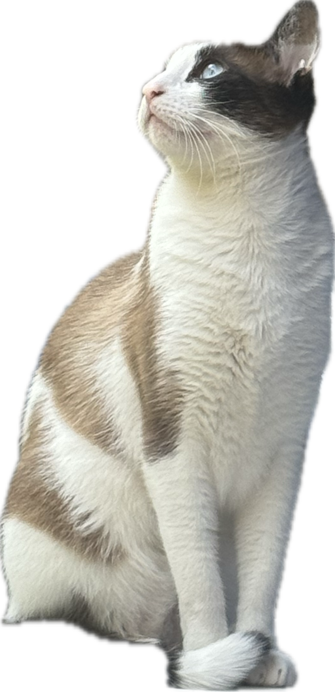

Image anchored WebAR
Augmentiverse Cat AR
Scan the printed cat target on a phone, or open the headset mode on Quest 3S for WebXR placement and compatibility checks.

- Model
- happy.glb
- Anchor
- targets.mind, index 0
- Target size
- Set printed width in settings